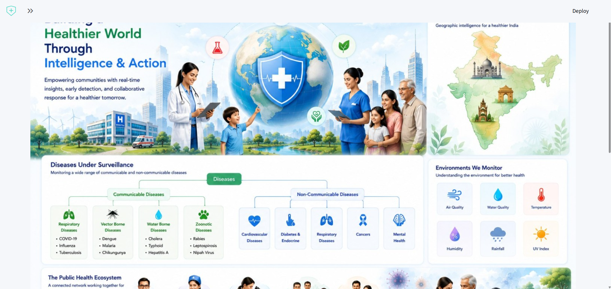
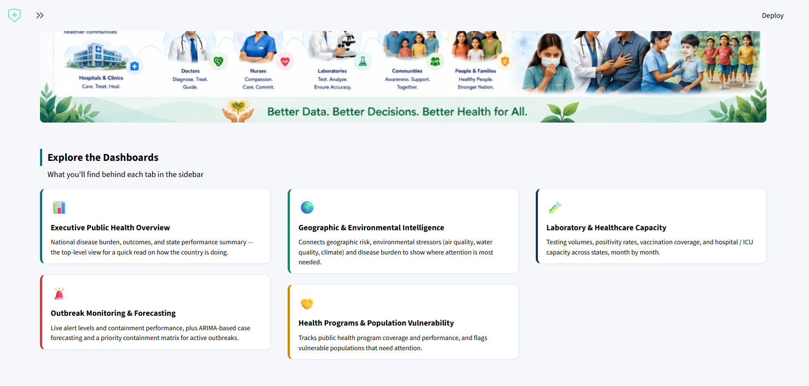

01 / PROJECT
HealthSentinel
Healthcare Operations Intelligence Dashboard
An interactive healthcare analytics solution covering public-health intelligence, operational KPIs, environmental factors, forecasting and decision analytics.
PythonPandasStreamlitPlotlyARIMAView on GitHub →